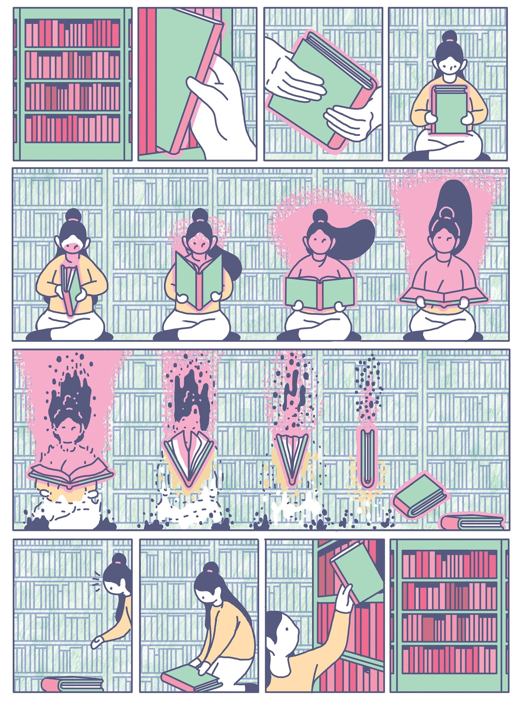

The graphic from the nifty NYT review.On the strength of nothing more than the fact that it's Audible's free book of the month, I've started listening to Midnight's library. It's fun and engaging. I'll copy and paste a review with which I broadly agree and then copy and paste the most enjoyable scene so far. I hope you enjoy it.
It is no secret that Matt Haig has mental health issues, dogged by the darkness of depression that has taken its toll on his life. His acute observations and experience of his condition informs this exquisite, inspiring, compassionate and empathetic novel where he creates the concept of the midnight library, to be found in the spaces between life and death, to explore life, the issues that afflict our world, through philosophy and more, endeavouring to tease out what might make life worth living and a joy and what gives it meaning. The device used to implement his goal is the ordinary Nora Seed, who has lived her life trying to please others, who has hit rock bottom, suffering the loss of her cat, her job, overwhelmed by the burden of a lifetime of regrets, seeing no light in her life whatsoever. She is tempted by thoughts of suicide that has her ending up at the midnight library. The midnight library is magical, for a start, the library has a limitless number of books, and these books are far from ordinary, Haig sprinkles gold dust in each book, offering Nora the opportunity to see how her life would have turned out if each and every decision at every point in her life had been different. The books illustrate the endless possibilities that life holds for Nora and all of us. Nora explores each book, with inquisitiveness and curiosity, the widely disparate lives that could have been hers, no easy task as she has to slip into each new life with the complications of being unfamiliar with it and do so without alerting the other people present. It soon becomes clear that there are pros and cons to each book/life, to each decision and choice made, each life containing its own mix of despair, pain and regrets that must be accommodated and handled. Haig offers a touching narrative that speaks of the joys to be found in living, attained through Nora's eyes as she tries to untangle what really matters in life, putting life in context and perspective with all its ongoing changes, complexities, and an understanding no life is perfect in itself. In some ways, this is a version of It's A Wonderful Life, a favourite film for so many people. What I was so struck by is just how many readers might find this helpful for our lock down times, so many have suffered unbearable losses and illness, have had to face not seeing all those we love and mean so much to us, whilst being weighed down with worries and concerns about how to cope with fears regarding jobs, childcare, money and more. A beautifully nuanced novel that I am sure many will love as much as me. Highly recommended.
In the third book she chooses — her third alternative life, Nora is an Olympic gold medalist. Each of her lives start out with the same plot as a "Thank God you're here". The protagonist has to pass into a world in which all those around her have been living and she has not. A lot of winging it goes on. In any event, in this one, she arrives in the world and is about to give a motivational speech. It wasn't 'realistic' at least given my psychology for her not to freak out about what she was going to say, unprepared. But the novelist takes it as an opportunity for a bit of comedy in which she tells us all what she's learning from her experience (and from the librarian in the Midnight Library — her old school librarian Mrs Elm).
‘Hello,’ she said nervously, into the microphone. ‘It is very nice to be here today . . .’
A thousand or so faces stared, waiting.
She had never spoken to so many people simultaneously. Even when she had been in The Labyrinths, they had never played a gig for more than a hundred people, and back then she kept the talking between the songs as minimal as possible. Working at String Theory, although she was perfectly okay talking with customers, she rarely spoke up in staff meetings, even though there had never been more than five people in the room. Back at university, while Izzy always breezed through presentations Nora would worry about them for weeks in advance.
Joe and Rory were staring at her with baffled expressions.
The Nora she had seen in the TED talk was not this Nora, and she doubted she could ever become that person. Not without having done all that she had done.
‘Hello. My name is Nora Seed.’
She hadn’t meant it to be funny but the whole room laughed at this. There had clearly been no need to introduce herself.
‘Life is strange,’ she said. ‘How we live it all at once. In a straight line. But really that’s not the whole picture. Because life isn’t simply made of the things we do, but the things we don’t do too. And every moment of our life is a . . . kind of turning.’
Still nothing.
‘Think about it. Think about how we start off . . . as this set thing. Like the seed of a tree planted in the ground. And then we . . . we grow . . . we grow . . . and at first we are a trunk . . .’
Absolutely nothing.
‘But then the tree – the tree that is our life – develops branches. And think of all those branches, departing from the trunk at different heights. And think of all those branches, branching off again, heading in often opposing directions. Think of those branches becoming other branches, and those becoming twigs. And think of the end of each of those twigs, all in different places, having started from the same one. A life is like that, but on a bigger scale. New branches are formed every second of every day. And from our perspective – from everyone’s perspective – it feels like a . . . like a continuum. Each twig has travelled only one journey. But there are still other twigs. And there are also other todays. Other lives that would have been different if you’d taken different directions earlier in your life. This is a tree of life. Lots of religions and mythologies have talked about the tree of life. It’s there in Buddhism, Judaism and Christianity. Lots of philosophers and writers have talked about tree metaphors too. For Sylvia Plath, existence was a fig tree and each possible life she could live – the happily-married one, the successful-poet one – was this sweet juicy fig, but she couldn’t get to taste the sweet juicy figs and so they just rotted right in front of her. It can drive you insane, thinking of all the other lives we don’t live.
‘For instance, in most of my lives I am not standing at this podium talking to you about success . . . In most lives I am not an Olympic gold medallist.’ She remembered something Mrs Elm had told her in the Midnight Library. ‘You see, doing one thing differently is very often the same as doing everything differently. Actions can’t be reversed within a lifetime, however much we try . . .’
People were listening now. They clearly needed a Mrs Elm in their lives.
‘The only way to learn is to live.’
And she went on in this manner for another twenty minutes, remembering as much as possible of what Mrs Elm had told her, and then she looked down at her hands, glowing white from the light of the lectern.
As she absorbed the sight of a raised, thin pink line of flesh, she knew the scar was self-inflicted, and it put her off her flow. Or rather, put her into a new one.
‘And . . . and the thing is . . . the thing is . . . what we consider to be the most successful route for us to take, actually isn’t. Because too often our view of success is about some external bullshit idea of achievement – an Olympic medal, the ideal husband, a good salary. And we have all these metrics that we try and reach. When really success isn’t something you measure, and life isn’t a race you can win. It’s all . . . bollocks, actually . . .’
The audience definitely looked uncomfortable now. Clearly this was not the speech they were expecting. She scanned the crowd and saw a single face smiling up at her. It took a second, given the fact that he was smartly dressed in a blue cotton shirt and with hair far shorter than it was in his Bedford life, for her to realise it was Ravi. This Ravi looked friendly, but she couldn’t shake the knowledge of the other Ravi, the one who had stormed out of the newsagent’s, sulking about not being able to afford a magazine and blaming her for it.
‘You see, I know that you were expecting my TED talk on the path to success. But the truth is that success is a delusion. It’s all a delusion. I mean, yes, there are things we can overcome. For instance, I am someone who gets stage fright and yet, here I am, on a stage. Look at me . . . on a stage! And someone told me recently, they told me that my problem isn’t actually stage fright. My problem is life fright. And you know what? They’re fucking right. Because life is frightening, and it is frightening for a reason, and the reason is that it doesn’t matter which branch of a life we get to live, we are always the same rotten tree. I wanted to be many things in my life. All kinds of things. But if your life is rotten, it will be rotten no matter what you do. The damp rots the whole useless thing . . .’
Joe was desperately slicing his hand in the air around his neck, making a ‘cut it’ gesture.
‘Anyway, just be kind and . . . Just be kind. I have a feeling I am about to go, so I would just like to say I love my brother Joe. I love you, brother, and I love everyone in this room, and it was very nice to be here.’
And the moment she had said it was nice to be there, was also the moment she wasn’t there at all.
I really like the concept of the midlight library. What a great vehicle for exploration. Was it explicitly inspired by various Divine Comedies of centuries gone by that used very similar 'conversations in purgatory' devices?
I'm pretty sure it wasn't. There's been no sign so far and I'm about 3/4rs through it.
It does have references to theories within physics of the multiverse, but I can't say I find them particularly inspired. I think Herbert Simon's ideas are a better motivation of the human multiverse. My way of putting Simon's point is that the the disciplines of science are about the what the universe is — and therefore are about a singular object. Whereas the disciplines of design — in which he includes engineering and medicine are about the multiverse of what could be and what we want and should want. Consideration of our lives fits in the second category.